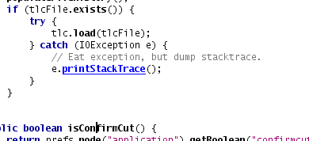
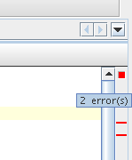

Roman Strobl is a Software Quality Engineer working on NetBeans. He writes one
of the popular blogs at sun.com. In May 2005 Vincent Brabant interviewed him
for the NetBeans Edge.
1. Roman, when did you join the NetBeans team?
Roman: I've joined the NetBeans team in October 2004, so I'm still quite new in here.
2. Why did you choose to join the NetBeans team?
Roman: I always wanted to work in a larger group of developers.
NetBeans was a nice opportunity because the team is in Prague and it is a real opensource project.
3. What is your task/role therein?
Roman: I am a software quality engineer.
These are fancy words for being a tester.
I've also joined the new usability team which is busy with improving user experience with NetBeans.
Next to it, I try to do my best to promote NetBeans.
4. How is the NetBeans quality engineering team organised?
Roman:
We have a team of 25 quality engineers.
We used to be two teams, one for core development platform and one for webapps and J2EE.
These two teams joined recently.
A part of the testing is also done by NetBeans community -
through NetCat program or simply by submitting issues to Issuezilla.
5. 25 quality engineers? Really? Personnaly, I never imagined that you were 25 peoples to check the quality of NetBeans.
Roman:
Yes, 25, although some of them work parttime.
It's a lot of work to check NetBeans on 7 platforms, with
various JDKs for all of the modules and features which are in NetBeans
(you can count the number of combinations for homework).
6. Who decides about the Test Scenarios?
Roman:
It's a responsiblity of the quality engineer
to come up with test scenarios for the module(s) he works on.
7. How do you actually test NetBeans?
Roman:
Basicly, it means to go through all test cases on
all supported platforms with various JDKs.
Alltogether it's a huge amount of work.
Part of the effort is simplified by using automated tests.
8. So, you are using tools to automate tests?
Roman:
Yes, we are.
There two types of tests - unit and functional.
Unit tests are maintained by developers, while functional tests by quality.
We use several frameworks developed inhouse - NBJunit, Xtest, Testtools, Jemmy and JellyTools.
For details, see http://testtools.netbeans.org
9. Test Specifications are based upon which document?
Roman:
Test specifications are based on the functional and UI specs.
If any of these is missing, than we try to get the information for creating test scenarios from developers.
II. NetBeans IDE 4.1
1. What do you think about the evolution of NetBeans 4.1?
Roman:
We are getting further - NetBeans is improving every release.
There's a lot of work in front of us, but I am also proud about the achievements so far.
All java developers should take a look at NetBeans 4.1 once released.
If they think NetBeans is not good enough yet, they should let us know what they miss
and in next release NetBeans will be again closer to the IDE they will love to use.
2. What is your prefered feature in the NetBeans IDE 4.1?
Roman:
There are several -
as I am doing quality engineering for editor module
I am excited about hyperlinking and error stripe.
>From the whole IDE - there are great improvements
in the project system and the J2ME stuff is really cool.
And of course J2EE support is a big deal.
a) Could you tell us more about hyperlinking and error stripe?
Roman:


Hyperlinking is a navigation tool you can use to go through the source codes.
You just press CTRL and hover mouse over your source code.
The java elements get underlined and you can jump to the declaration of them.
So you can very easily go through your source codes, almost like if you were using
a web browser. There are also back and forward icons, introduced recently.
The error stripe feature is a right side stripe which shows you all errors
in source code.
Not only shows, but you can click on it and it jumps to the error,
bookmark, breakpoint, todo, etc.
A pity it is not a part of the release, but it is available through
autoupdate for everybody.
3. What is the more annoying stuff in the NetBeans IDE 4.1?
Roman:
I'm annoyed by the Tools | Options dialog.
Hopefully the work on redesign has already started.
There are other issues which annoy me and I will work on getting them fixed by developers.
III. The NetCat Program
1. What do you think about the NetCat Program? Is it really adding value?
Roman:
Definitely. NetCat is great not only for bug reporting, but it also opens
discussions about the recently implemented features.
It represents part of the voice of the customer which is very
important to listen to if you want to create a really good IDE.
2. Did NetCat help to enhance the quality of the NetBeans 4.1 release?
Roman:
Surely it helped.
Although the most valued feedback came at the end of development cycle
- we wish it came earlier ;-)
4. What has been fixed in RC2 comparing to RC1?
Roman:
There were important debugger fixes +
several other few fixes from other modules.
IV. NetBeans IDE 5.0
1. Which features would you like to see in the NetBeans IDE 5.0?
Roman:
I want to see many of them -
my list starts with editor improvements -
better formatter, improved and faster code completion,
live templates,
support of various keybindings,
fixing of old enhancements from Issuezilla...
I could go on with the list,
but these are the most important ones.
>From the rest of the IDE I am very much looking forward to the new GUI builder
with natural layout which I already saw in action and it looks pretty amazing.
I am also looking forward to the simplified CVS module.
a) Could you please give us more information concerning the improved and faster code completion?
Roman:
Certainly.
At first, we should not forget the code completion's performance is already slightly improved in 4.1 compared to 4.0 release.
Second, the developers are working on a new code completion for 5.0, which is faster - I've seen it live.
b) Live? Why not integrate it into the NetBeans 4.1 release then?
Roman:
It would be risky to integrate it into the release now, there may remain bugs
which would not be caught by making it happen fast - and we certainly want to have a stable release.
2. Any idea of the planning for 5.0?
Roman:
I do not have a complete overview of the planning - as you now I'm just a quality engineer.
Surely there'll be a new GUI builder with natural layout and a simplified CVS module.
I know about lots of editor improvements - better and faster code completion, we were also discussing formatting improvements.
In the whole IDE you can expect lots of usability improvements everybody will benefit from.
Support for more J2EE frameworks and application servers will appear, as far as I know.
a) For NetBeans IDE 4.1, focus was J2EE support. What will be the focus for NetBeans IDE 5.0?
Roman:
There several themes - usability is one of the important ones. Again, this is not a good question for me.
b) Will you introduce JSF Support? More Refactoring? Spring? Hibernate?
JBoss? Mustang? Enhancement of Form Editor? Two Way Editing?
Adding J2ME Workflow for J2SE projects?
Roman:
Wait for the official announcements.
c) Why are you a bit misterious around the planning?
Why not propose to the community a list of features to implement / issues to fixes and let's them vote therefore?
Roman:
I'm not mysterious, it's just that I don't want to promis something which will not happen.
Also, planning is out of my competenteces, you should rather ask some of the architecs or managers.
Sorry, I can't help you with that.
V. His Blog
1. What about your blog?
Roman:
There's a lot of tips for NetBeans users,
descriptions and cool demos of new NetBeans features -
everyone should check it out at
http://blogs.sun.com/roumen.
My blog's mostly among the 30 most popular blogs at blogs.sun.com and still moving upwards.
I want to create more NetBeans flash demos, write about new features
and get feedback from the community as well.
And after all, it's real fun, I can recommend blogging to everybody!
I am happy to hear that. And you are doing a really good job.
Personally, I think that your blog is doing a very good job to spread news
about NetBeans.
Roman:
That was my intention from the very beginning. I think we need to spread
the information about NetBeans - NetBeans developers need to talk to developers
working in NetBeans (although I'm in QA now I've been developing for 5 years in my last job).
I hope some others will start to blog as well - this would really help NetBeans
in my opinion. We need to get the information out - mainly the tips&tricks, faqs,
demos, information about new features and so forth.
2. Somes bloggers are saying that Sun is now too aggressive with their blogs
about NetBeans? What is your opinion about that?
Roman:
I would tell them to take a look at blogs of people working in IBM
who write about Eclipse ;-) No, seriously, I think NetBeans is getting better and we need to spread the news.
Hey, Eclipse has so much hype, why should we not spread some good words, too?
We've got some unique features and we want people to see both sides of the story.
So I think promoting NetBeans through blogs is good both for Sun and all java developers,
as long as the blogs are based on the truth and relevant.
VI. NetBeans vs Eclipse
1. What is your feeling concerning the NetBeans vs Eclipse war?
Roman:
There's a lot of marketing hype around Eclipse.
NetBeans is improving, there's a lot of hard work done by all people working on NetBeans,
we are seriously competing with Eclipse.
At the end I think both IDEs will prevail and serve different user bases.
Which is quite unfortunate for all commercial IDEs, most of them will be out of game soon.
2. Is it a good thing to have competition?
Roman:
Yes, it is.
Competition is good, it makes the better products.
If either NetBeans or Eclipse would be a monopoly,
the development would stagnate which would not be good for developers.
3. Why not join effort to have one nice IDE that rocks?
Roman:
No, I don't think so.
I don't believe SWT was a good choice for Eclipse.
It's a burden Eclipse will have to carry - it will be hard to maintain the code
for all 5 operating systems they are supporting.
So all bugfixes and enhancements of the widget code will have to be done on
several places, possibly introducing new bugs or inconsistent behaviour on
various platforms. And as I said, choice is good, because it forces both sides
to make better products.
Personally, I don't want that. I like competition.
And fact that we have two open source IDE is a good thing.
And I am convinced that NetBeans take the good way.
But IBM Marketing budget seems higher than Sun one.
Roman:
You can say that again.
Yes, IBM is very good at marketing. Hopefully the when the hype fades away all that
matters are the real parameters of the IDEs. Which makes me feel relaxed, because
we are working hard to make a good IDE.
VII. Conclusion
Something to say to the NetBeans Community ?
Roman:
Yes. NetBeans is getting better release by release.
The voice of the community is important -
to build an even better IDE we need input from the community -
think what would help NetBeans the most and engage the discussions in mailling lists.
As for the good news, old enhancements from Isuezilla will get evaluated soon
and I hope to see the important ones implemented.
Try NetBeans 4.1, let us know your feedback and look forward to 5.0 which will
contain some of the killer features -
especially the new GUI builder looks incredible.
Thank you for your replies, Roman
Roman will be at Java One, you can meet him on the NetBeans Day
This interview has been conducted by Vincent Brabant begin of may. Before the announcement of the final release.